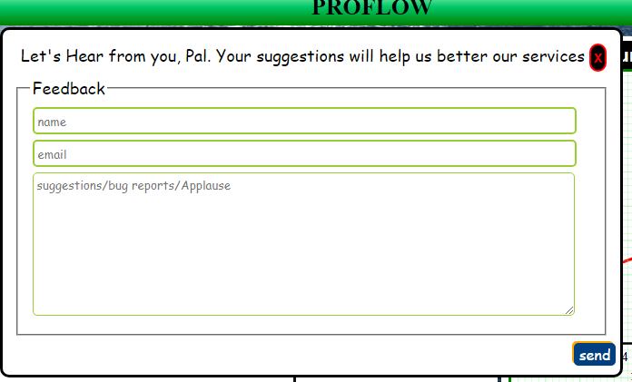
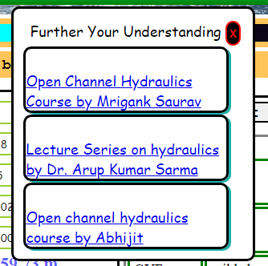

These functionalities reqiure you to have an internet connection.
Sending Feedback
In case you want to report bugs, or contact the developer, click the button labeled Feedback.
Fill The form that pops up, and click the button labeled send

Viewing Study Material
We have put together a list of free courses that you can take on to widen your knowledge on hydraulics.
Click on the button labeled Study and choose fom one of the links that appear.
